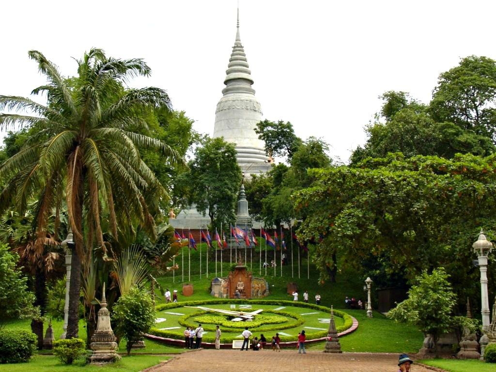
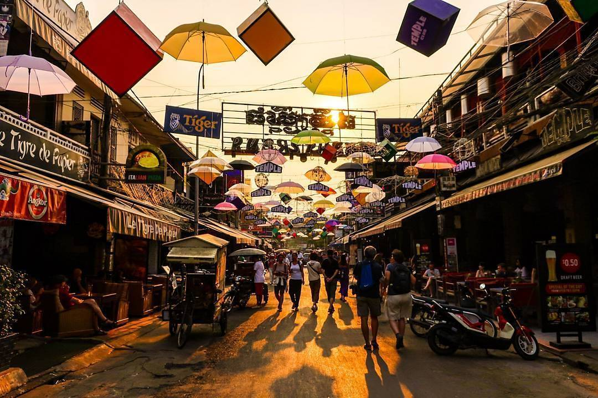
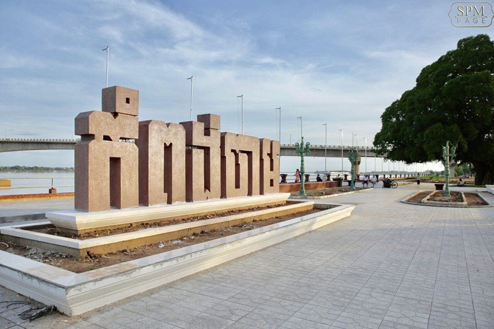
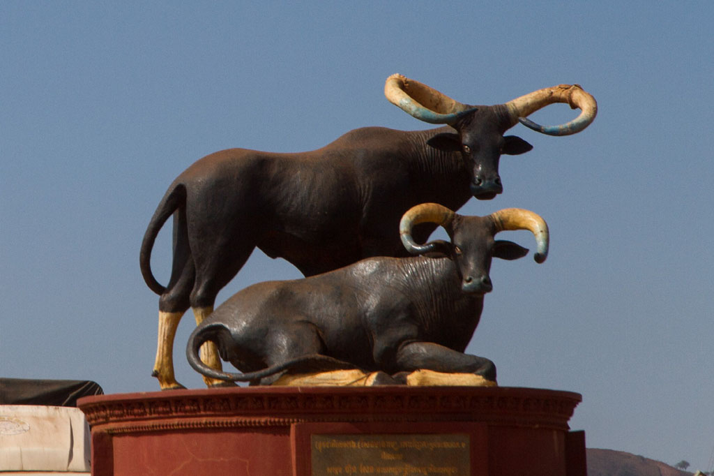
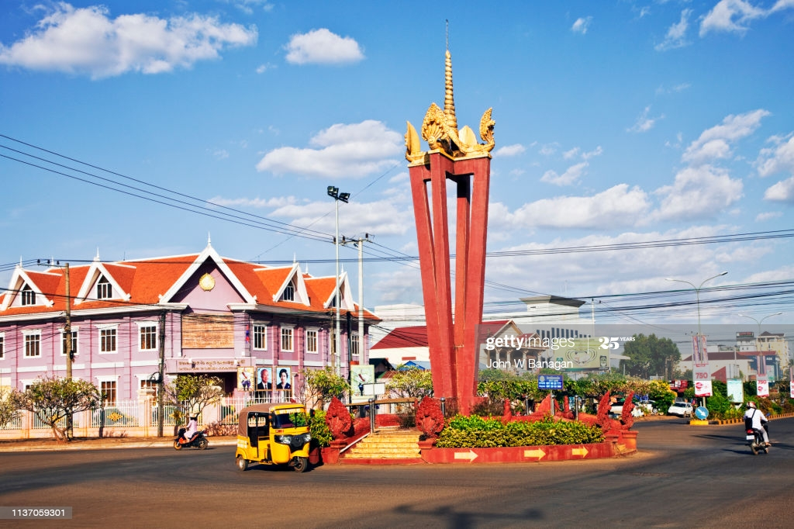

Welcome To Cambodia
Kingdom of Wonder
Angkor Wat is a temple complex in Cambodia and the largest religious monument in the world...
Visit NowCapital
Phnom Penh
Phnom Penh, Cambodia’s busy capital, sits at the junction of the Mekong and Tonlé Sap rivers. It was a hub for both the Khmer Empire and French colonialists. On its walkable riverfront, lined with parks, restaurants and bars, are the ornate Royal Palace, Silver Pagoda and the National Museum, displaying artifacts from around the country. At the city’s heart is the massive, art deco Central Market.
See MoreCity
Krong Siem Reap
Siem Reap (Khmer: ក្រុងសៀមរាប) is the capital city of Siem Reap Province in northwestern Cambodia. Siem Reap has colonial and Chinese-style architecture in the Old French Quarter and around the Old Market.
See MoreKrong Kampong Cham
Kampong Cham Municipality (Khmer: ស្រុកកំពង់ចាម) is a municipality (krong) of Kampong Cham Province, Cambodia. Kampong Cham is considered an urban district. The provincial capital Kampong Cham City is located in this district.
See MoreProvince
Mondulkiri Province
Mondulkiri(Khmer: មណ្ឌលគិរី), is a province (khaet) of Cambodia. Bordering the provinces of Kratié to the west, Stung Treng to the northwest, Ratanakiri to the north and the country of Vietnam to the east and south, it is the most sparsely populated province in the country despite being the largest in land area.
See MoreRatanakiri Province
Ratanakiri(Khmer: រតនគិរី), is a province of northeast Cambodia. It borders the provinces of Mondulkiri to the south and Stung Treng to the west and the countries of Laos and Vietnam to the north and east, respectively. The province extends from the mountains of the Annamite Range in the north, across a hilly plateau between the Tonle San and Tonle Srepok rivers.
See MoreBattambang Province

Battambang(Khmer: បាត់ដំបង) is a province (khaet) of Cambodia in the far northwest of the country. Bordering provinces are Banteay Meanchey to the north, Pursat to the east and south, Siem Reap to the northeast, and Pailin to the west. The northern and southern extremes of the province's western boundaries form part of the international border with Thailand.
See MoreAbout
Cambodia( Khmer: កម្ពុជា ), officially the Kingdom of Cambodia (Khmer: ព្រះរាជាណាចក្រកម្ពុជា), is a country located in the southern portion of the Indochina peninsula in Southeast Asia. It is 181,035 square kilometres (69,898 square miles) in area, bordered by Thailand to the northwest, Laos to the northeast, Vietnam to the east and the Gulf of Thailand to the southwest. The sovereign state of Cambodia has a population of over 15 million. Buddhism is enshrined the constitution as the official state religion, and is practised by more than 97% of the population. Cambodia's minority groups include Vietnamese, Chinese, Chams and 30 hill tribes. The capital and largest city is Phnom Penh, the political, economic and cultural centre of Cambodia. The kingdom is an elective constitutional monarchy with a monarch, currently Norodom Sihamoni, chosen by the Royal Council of the Throne as head of state. The head of government is the Prime Minister, currently Hun Sen, the longest serving non-royal leader in Southeast Asia, ruling Cambodia since 1985. In 802 AD, Jayavarman II declared himself king, uniting the warring Khmer princes of Chenla under the name "Kambuja".[10] This marked the beginning of the Khmer Empire, which flourished for over 600 years, allowing successive kings to control and exert influence over much of Southeast Asia and accumulate immense power and wealth. The Indianised kingdom facilitated the spread of first Hinduism and then Buddhism to much of Southeast Asia and undertook many religious infrastructural projects throughout the region, including the construction of more than 1,000 temples and monuments in Angkor alone. Angkor Wat is the most famous of these structures and is designated as a World Heritage Site. In the fifteenth century, after the rebellion of Ayutthaya, which was formerly ruled by the Khmer Empire, Cambodia experienced the decline of power. Cambodia faced two increasingly powerful neighbors, Ayutthaya of Thailand and Nguyen dynasty of Vietnam, and marking the downturn of Cambodia's fate. In 1863, Cambodia became a protectorate of France, and later was incorporated into French Indochina of Southeast Asia. Cambodia gained independence from France in 1953. The Vietnam War extended into the country in 1965 with the expansion of the Ho Chi Minh Trail and establishment of the Sihanouk Trail. This led to the US bombing of Cambodia from 1969 until 1973. Following the Cambodian coup of 1970 which installed the right-wing pro-US Khmer Republic, the deposed King Sihanouk gave his support to his former enemies, the Khmer Rouge. With the support of the monarchy and North Vietnam, the Khmer Rouge emerged as a major power, taking Phnom Penh in 1975. The Khmer Rouge then carried out the Cambodian genocide from 1975 until 1979, when they were ousted by Vietnam and the Vietnamese-backed People's Republic of Kampuchea, supported by the Soviet Union, in the Cambodian–Vietnamese War.